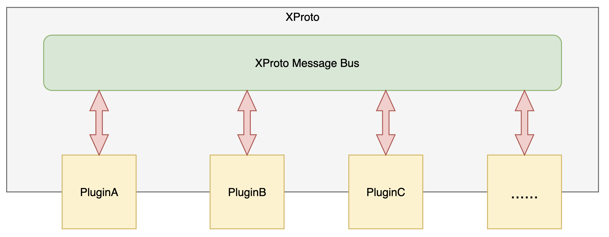
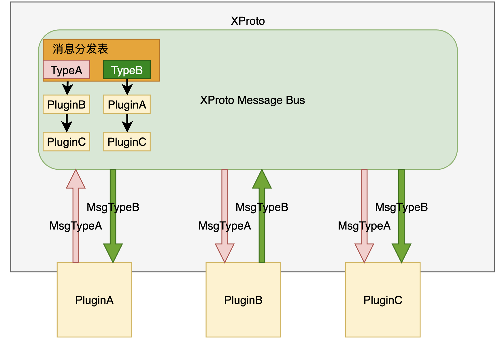
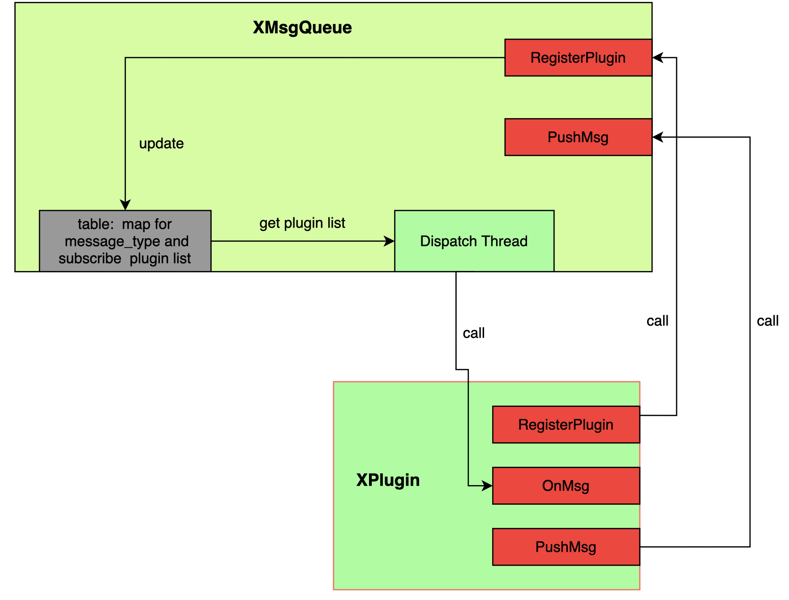
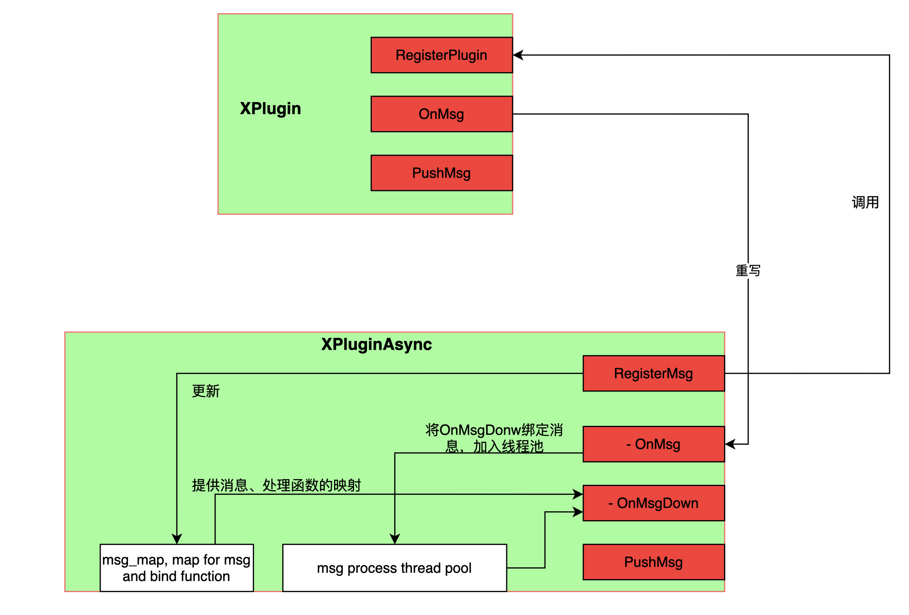
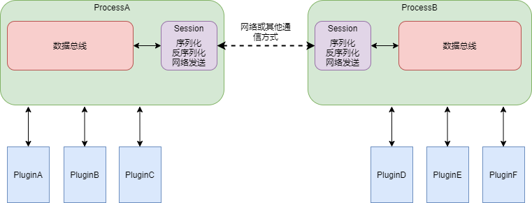

XProto应用开发框架¶
XProto Framework是一套简易的基于消息发布订阅机制的应用开发框架。框架内部核心组件为消息总线，为用户应用程序提供了多模块的数据传输以及数据发布、订阅的能力。在XProto框架上，各个业务组件被定义为Plugin，比如用于摄像头数据拉取的VioPlugin，用于智能数据推理的Smartplugin，这些Plugin组件挂载在XProto消息总线上，可以订阅消息总线上的消息并进行处理，同时每个Plugin可以向消息总线发布消息，供其他Plugin进行订阅处理。
目前XProto Framework存在如下特性：
XProto消息总线工作在单个进程内，暂不支持跨进程的数据发布与订阅。
XProto基于MsgType消息类型进行消息定向发布和订阅，支持用户自定义MsgType。
支持用户自定义Plugin。内置视频通路，编解码，可视化等常见XProto plugin功能组件。
XProto框架C++ 11标准进行编码，并对外源码开放。默认支持XJ3 Aarch64平台、Centos/Ubuntu X86平台编译和使用，迁移第三方平台工作量较低。
下面文档将会围绕框架使用，编译，设计原理进行介绍。
1. 使用和编译¶
XProto Frameowork采用预编译库和源代码两种方式进行发布。通常情况下，用户仅仅需要引用预编译库的include头文件和so/a库就可以进行应用开发。仅仅在一些二次开发场景，用户才需要源代码进行修改和编译。
XProto源代码在Github社区进行开源(https://github.com/HorizonRobotics-Platform/AI-EXPRESS)，如果你对XProto框架本身有好的想法需要进行二次开发，也欢迎您在社区上和我们进行讨论，并贡献您的代码。
预编译库目标发布包括Release和Debug版本的动态库和静态库文件，你可以根据的需求自主引用相应的库文件。发布包目录结构如下所示。
└── xproto
├── include
│ └── xproto
├── centos
├── ubuntu
└── xj3j5
源代码编译这块，目前我们采用CMake来管理框架的工程编译（CMake版本要求2.8+）。在源码根目录下，我们默认提供了XJ3 Aarch64、Centos/Ubuntu X86三个平台的编译Shell脚本，支持你可以进行编译。
bash build_aarch64.sh
bash build_centos.sh
bash build_ubuntu.sh
对于arm aarch64环境，需要提前配置交叉编译环境。
set(CMAKE_CXX_COMPILER /opt/gcc-linaro-6.5.0-2018.12-x86_64_aarch64-linux-gnu/bin/aarch64-linux-gnu-g++)
2. 开发示例：Hello World¶
本章节我们将采用一个简单的生产者消费者示例，来解释如何在跨Plugin组件之间进行数据传输和数据的订阅和消费。
基于XProto进行业务开发，主要包括以下三个内容：
消息定义：多个Plugin组件采用MSG_TYPE来标示一个消息，并基于它来实现定向订阅和发布。
自定义Plugin组件开发：我们提供了Plugin接口，支持用户自行扩展新的Plugin组件，每个Plugin支持独立进行源码或者SO管理。
多组件组合以及Main函数开发：基于XProto接口来启动整个消息总线。
下面示例包括两个模块：一个模块负责产生数据，并发布到消息总线，另一个模块从消息总线订阅消息，并对数据进行累加处理。
2.1 消息定义¶
消息定义分为MSG_TYPE定义、注册以及XProtoMessage定义三个部分。
#define TYPE_SAMPLE_MESSAGE "XPLUGIN_SAMPLE_MESSAGE" // 消息类型
XPLUGIN_REGISTER_MSG_TYPE(XPLUGIN_SAMPLE_MESSAGE) // 注册消息
struct NumberProdMessage : XProtoMessage { // 自定义消息结构
float num_;
explicit NumberProdMessage(float num) :num_(num) {
type_ = TYPE_SAMPLE_MESSAGE;
}
std::string Serialize() override {
std::ostringstream ss;
ss << num_;
return std::string(ss.str());
}
};
每个XProto消息类型，均需要继承XProtoMessage，消息定义中最重要的是type_成员，该type_表明消息的类型MSG_TYPE，不同的消息定义，其type_成员不能相同。
MSG_TYPE消息类型采用一个宏常量，并基于XPLUGIN_REGISTER_MSG_TYPE宏将其注册到消息总线中，框架内部会基于MSG_TYPE消息类型来进行消息分发。
XPLUGIN_REGISTER_MSG_TYPE宏定义如下，内部调用框架的Register函数进行MSG_TYPE注册。
#define XPLUGIN_REGISTER_MSG_TYPE(key) \
static xproto::XPluginMsgTypeHandle \
__make__##key##__xplugin_msg_type__ = \
xproto::XPluginMsgRegistry::Instance().Register( \
#key);
2.2 Plugin组件开发¶
该示例中定义了两个Plugin：
NumberProducerPlugin：这个Plugin内部会创建一个工作线程，每隔40ms发送一个数值为5的类型为TYPE_SAMPLE_MESSAGE的消息，共发送50次。SumConsumerPlugin：这个Plugin订阅TYPE_SAMPLE_MESSAGE消息，并绑定了一个消息处理函数，消息处理函数中将收到的TYPE_SAMPLE_MESSAGE消息的值进行累加，打印。一共会有50次消息产生，消息处理函数也会被触发50次。
class NumberProducerPlugin : public XPluginAsync {
public:
// 初始化
int Init() {
total_cnt_ = 50;
prd_thread_ = nullptr;
return XPluginAsync::Init();
}
// 启动
int Start() {
// 开辟一个线程，单独产生消息，发布到总线
prd_thread_ = new std::thread([&] (){
for (uint32_t i = 0; i < total_cnt_ && !prd_stop_; i++) {
auto np_msg = std::make_shared<NumberProdMessage>(5);
PushMsg(np_msg); // 发布到消息总线
std::this_thread::sleep_for(milliseconds(40));
}
});
return 0;
}
// 暂停
int Stop() {
prd_stop_ = true;
prd_thread_->join();
if (prd_thread_) {
delete prd_thread_;
}
return 0;
}
// 资源释放
int DeInit() {
return XPluginAsync::DeInit();
}
private:
uint32_t total_cnt_;
std::thread *prd_thread_;
bool prd_stop_{false};
};
class SumConsumerPlugin : public XPluginAsync {
public:
// 初始化
int Init() override {
sum_ = 0.f;
RegisterMsg(TYPE_SAMPLE_MESSAGE, std::bind(&SumConsumerPlugin::Sum,
this, std::placeholders::_1));
return XPluginAsync::Init();
}
// 消息回调函数，对收到的消息做累加
int Sum(XProtoMessagePtr msg) {
auto np_msg = std::static_pointer_cast<NumberProdMessage>(msg);
sum_ += np_msg->num_;
LOGI << "curr sum:" << sum_;
return sum_;
}
// 启动
int Start() {
return 0;
}
// 停止
int Stop() {
return 0;
}
// 资源释放
int DeInit() {
return XPluginAsync::DeInit();
}
private:
float sum_;
};
开发Plugin的相关说明如下：
继承XPluginAsync来自定义新的Plugin，并在继承类中重写
Init(),Start(),Stop(),DeInit()函数。自定义Plugin的
Init()接口尾部，需要显性调用父类XPluginAsync::Init()接口，完成基础类部分的初始化生成者Plugin直接调用使用框架的
PushMsg()接口向总线发布消息。订阅者Plugin，可以在Plugin初始化的时候，通过
RegisterMsg接口订阅感兴趣的消息类型，同时绑定一个消息处理函数。
2.3 应用串联¶
现在需要将NumberProducerPlugin和SumConsumerPlugin两个Plugin进行串联，打通整个业务流程。
#include "xproto/xproto_world.h"
int main() {
auto producer_plg = std::make_shared<NumberProducerPlugin>();
auto consumer_plg = std::make_shared<SumConsumerPlugin>();
producer_plg->Init();
consumer_plg->Init();
producer_plg->Start();
consumer_plg->Start();
std::this_thread::sleep_for(seconds(3));
producer_plg->Stop();
consumer_plg->Stop();
producer_plg->DeInit();
consumer_plg->DeInit();
return 0;
}
在Main函数中，我们构建两个Plugin对象，并依次调用Plugin的Init->Start接口，启动整个APP，并在最后依次调用Plugin的Stop->DeInit接口来关闭、释放Plugin对象。
3. 设计原理¶
XProto Framework内部主要包括Plugin插件管理器和消息分发器两个部分。
Plugin插件是一个任务实体，所有的Plugin插件都连接到XProto消息总线中，并被Plugin插件管理器进行管理，当一个Plugin插件产生消息并把消息Push到总线之后，其他订阅该消息的Plugin插件的处理接口就可以被调用，实现基于消息发布订阅的开发模式。
整个架构图如下图所示 
3.1 消息总线机制¶
消息总线基于MSG_TYPE来实现消息订阅和分发。
下图示例是在总线上注册了TypeA和TypeB两种类型的消息，代表总线能处理这两种类型的消息。MsgTypeA的消息类型是TypeA，MsgTypeB的消息类型是TypeB。

PluginB和PluginC在初始化时订阅了TypeA类型消息，在总线的消息分表表中，TypeA类型对应的分发表中则有两个Plugin，分别为PluginB和PluginC，总线接收到TypeA的消息，依次分发分发表中Plugin。
PluginA输出MsgTypeA消息，并把MsgA消息Push到总线上，总线依据消息分发表把MsgTypeA推送给PluginB和PluginC；同样，PluginB生成TypeB类型的消息会被总线推送给PluginA和PluginC。
消息总线的实现参考下图：

XProto内部定义了XMsgQueue消息总线，XMsgQueue提供两个接口RegisterPlugin以及PushMsg：
XMsgQueue::RegisterPlugin： 提供接口给XPlugin调用，让XPlugin注册自己感兴趣的消息，每个XPlugin对象可以调用多次，注册不同的消息。XMsgQueue::PushMsg： 提供接口给XPlugin调用，用于向总线推送消息。table:XMsgQueue内部维护了一个table，用于记录每个消息的订阅者。
XMsgQueue内部进行消息分发的过程大致如下：
当XPlugin调用PushMsg接口的时候，
XPlugin::PushMsg内部会调用XMsgQueue::PushMsg。在XMsgQueue::PushMsg内部会将消息送入消息分发的线程池Dispatch Thread进行后续的处理。消息分发线程池根据消息类型从table中获得那些订阅的XPlugin对象，以此调用XPlugin对象的OnMsg接口，完成消息的分发。
关于消息分发性能问题：
1. XProto框架内部消息分发线程池默认大小为1，用户可以自行通过通过修改框架代码来进行分发加上。
2. 若某个XPlugin对象的OnMsg处理慢，会导致整个消息总线的处理性能下降。为解决这个问题，提供了XPluginAsyc解决方案。建议基于XProto开发，均基于XPluginAsyc开发Plugin组件。
3.2 XPluginAsync¶
XPluginAsync 继承自XPlugin。

XPluginAsyn::RegiserMsg ：提供了注册消息，并对该消息的处理绑定一个处理函数。绑定关系保存在msg_map中。
XPluginAsyn::OnMsg：消息分发处理函数，XPluginAsync内部已经实现，收到消息直接将消息绑定到OnMsgDown接口，送入线程池处理。
XPluginAsyn::OnMsgDown：真正处理消息的接口，内部会根据消息类型，从msg_map中获得绑定的处理接口，调用处理接口完成消息处理。
消息处理线程池：默认开辟一个线程，通过传入参数可以设置线程池数量。该线程池处理当前XPluginAsyn订阅的消息。
为解决XPlugin::OnMsg处理慢导致消息总线效率低的问题，XPluginAsync将消息处理OnMsg分为两个步骤：
将收到的消息传入一个线程任务队列，确保OnMsg立即返回；
在线程池中调用OnMsgDown来异步处理该XPluginAsync对象感兴趣的消息。
4. 内置Plugin组件¶
基于地平线XJ3芯片硬件能力，我们内置了一些基础的Plugin，详细列表参考solution_zoo工程目录。
5. 进程间通信支持¶
xproto新增一个Session模块，支持进程间/设备间向数据总线订阅/发布message，如下图所示：  Session分为Master/Slave两种角色, Master几点的Session负责所有message的分发 Slave节点的Session可以订阅Master节点或其他Slave几点的message session模块屏蔽了message在设备间的传输/序列化/反序列化等细节，不同设备上plugin中可以像同一进程内订阅/发布消息 使用示例参考：tutorials/stage4_ipc_subscriber示例.
其他特殊说明： 1 Slave节点, 不支持生成并订阅同一类型消息, 此种情况会造成收到两个相同的message，此问题下个版本解决 2 当前版本暂不支持Session的信息查询
6. Android3399支持说明¶
Android相关依赖库使用的ndk版本为android-ndk-r21，路径为./third_party/arm/android，C++相关库使用C++_shared版本。